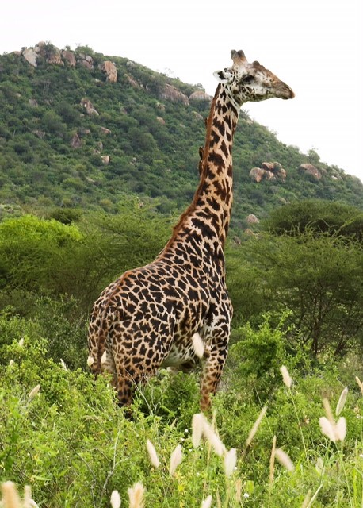
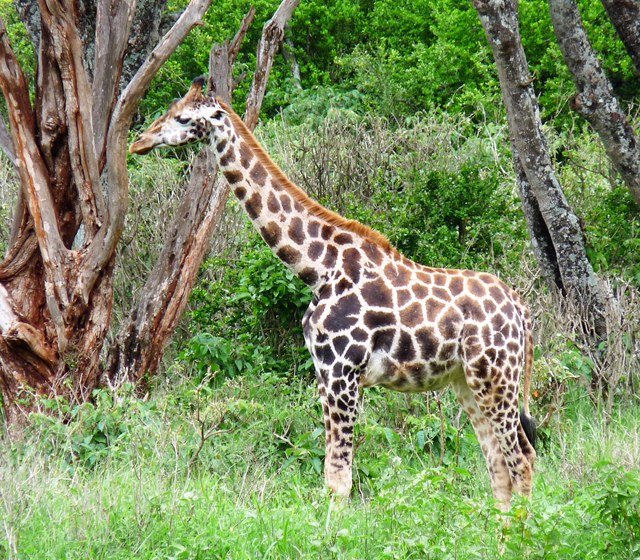
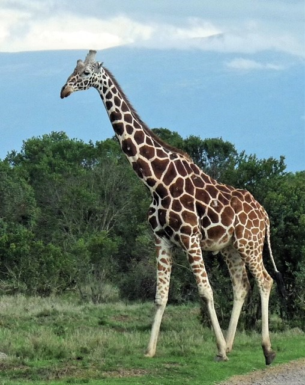

Different Giraffes
Explore a variety of giraffe images in our gallery below.
Masai Giraffe
The Masai giraffe, native to East Africa, is known for its jagged, vine-like spot patterns and towering height. It’s the largest giraffe subspecies, often seen roaming the savannas of Kenya and Tanzania. Gentle yet powerful, it’s an iconic symbol of the African landscape.
Nubian Giraffe
The Nubian giraffe, found mainly in parts of Ethiopia, South Sudan, and Kenya, is distinguished by its light, sharply defined patches and pale legs. It’s one of the rarest giraffe subspecies and is known for its elegant appearance and calm, gentle behavior.
Reticulated Giraffe
The reticulated giraffe, native to northern Kenya and parts of Somalia and Ethiopia, is known for its striking coat of crisp, white-lined geometric patterns. Sleek and elegant, it’s one of the most visually distinctive giraffe subspecies.
Northern Giraffe

The northern giraffe is a tall, elegant species found across parts of Central and East Africa. Known for its long legs, towering height, and distinctive coat patterns, it includes several rare subspecies and is recognized for its gentle nature and impressive adaptability.